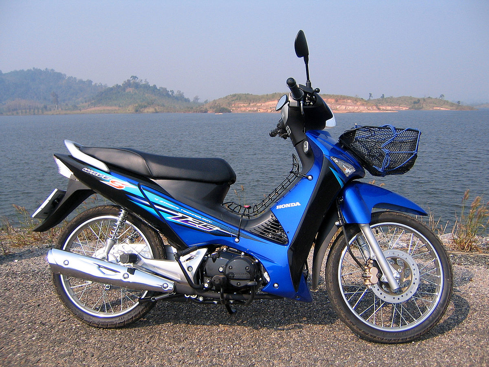

Honda Wave125 Alpha Power-trains The Wave125 Alpha is powered by a Air Cooled Carburetor 124.8 cc Cylinder engine that gives 8.71hp of power and 10.7 Nm Torque. It comes with the option of a 4-Speed transmission gearbox. The Wave125 Alpha has a seat height of 778 mm.
